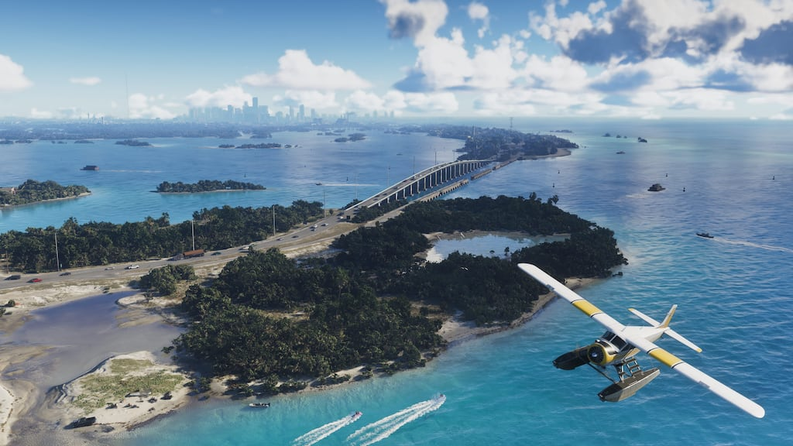
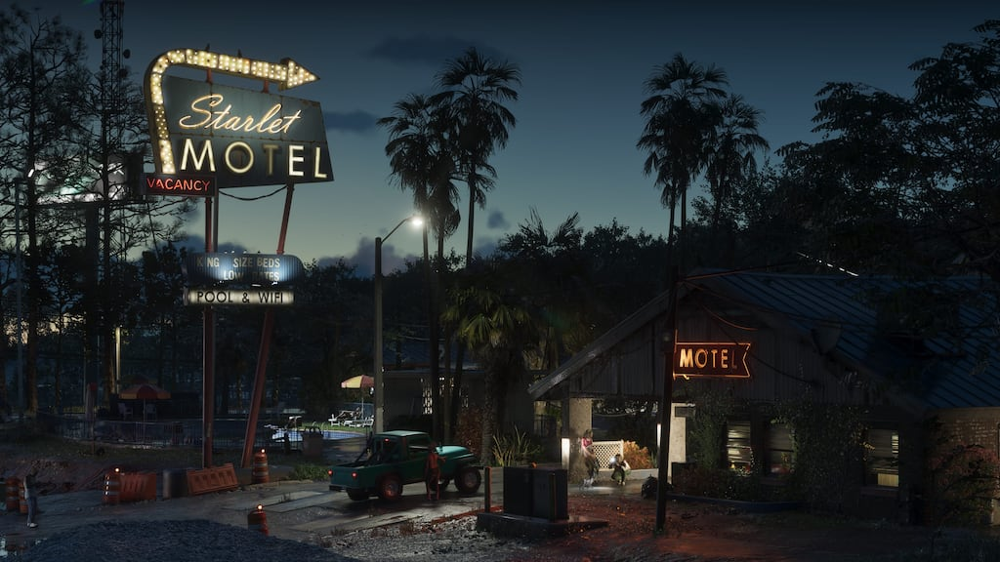

01 / LEONIDA
01 / LEONIDALuzes e litoral
Vice City
Vice City em um dos registros da galeria oficial de GTA VI.
Explorar no mapaSeis destinos apresentados na galeria oficial. Escolha um lugar e veja os registros que dão forma ao novo mundo de Grand Theft Auto.
01 / LEONIDAVice City em um dos registros da galeria oficial de GTA VI.
Explorar no mapa
02 / LEONIDAIlhas, água e estradas costeiras nos registros oficiais.
Explorar no mapa
03 / LEONIDAUm dos cenários identificados na galeria de Leonida.
Explorar no mapa 04 / LEONIDA
04 / LEONIDAVegetação e áreas alagadas contrastam com os cenários urbanos.
Explorar no mapa 05 / LEONIDA
05 / LEONIDAOutra região apresentada na coleção oficial de imagens.
Explorar no mapa 06 / LEONIDA
06 / LEONIDAPaisagens naturais do Mount Kalaga National Park na galeria oficial.
Explorar no mapaImagens e nomes de locais: galeria oficial da Rockstar Games. Os textos descrevem a seleção visual apresentada, sem estimar o tamanho do mapa.
Navegue por seis regiões divulgadas, filtre os cenários e abra as imagens oficiais em um explorador interativo.
Mapa ilustrativo: posições, distâncias e contornos não representam a geografia do jogo.
Abrir mapa interativo →Uma descoberta vira teoria. Uma dúvida vira guia. Reúna suas ideias com a comunidade e acompanhe o que os canais oficiais apresentam sobre GTA VI.
Novidades oficiais →